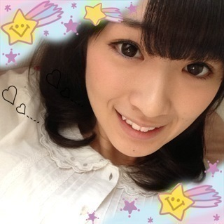
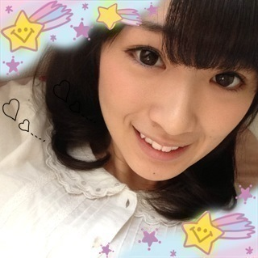

2012/1129Thu（´-`）.｡oO(かずみん×118
こんばんは！
いつも応援ありがとうございます！
ずーっと言いたかったことの
情報がついに解禁しました＼(^o^)／
なんと今回4thのカップリングで
「渋谷ブルース」をまいやんと高山で
歌わせてもらいました！！
本当に嬉しいです(T_T)
私はカップリング曲を指望遠鏡の他に
2曲も歌わせてもらってます(T_T)
嬉しい嬉しい。
もう1つの方はまだ詳しく
言えないのかな？またその話は後日♪
私は本当に歌が好きなんです(T_T)
別に上手くはないのですが、
とにかく歌が歌いたくて
アイドルになりたいとずっと
思ったんです(>_<)
だから本当に嬉しい！
渋谷ブルース...
題名渋いですね〜
曲も渋いですよ〜！
フォークソングが今の時代
あまりないので、
本当に昭和っぽいレトロな感じに
なってます！
渋谷ブルースは通常盤に
収録されていますので、
皆さん、ぜひ発売したら
聞いてみて下さい！
たかやまいやん♪
ナタリーさんにも記事が載っています！
http://natalie.mu/music/news/80669
皆さんぜひ！
よろしくお願いします(*^◯^*)
--------
今日のファッションは
こんな感じ♪
オトナめですね！
アベイルではないです。笑
それでは今日はこの辺で( ´ ▽ ` )ﾉ

ばいばい（＾ω＾）
いつも応援ありがとうございます！
ずーっと言いたかったことの
情報がついに解禁しました＼(^o^)／
なんと今回4thのカップリングで
「渋谷ブルース」をまいやんと高山で
歌わせてもらいました！！
本当に嬉しいです(T_T)
私はカップリング曲を指望遠鏡の他に
2曲も歌わせてもらってます(T_T)
嬉しい嬉しい。
もう1つの方はまだ詳しく
言えないのかな？またその話は後日♪
私は本当に歌が好きなんです(T_T)
別に上手くはないのですが、
とにかく歌が歌いたくて
アイドルになりたいとずっと
思ったんです(>_<)
だから本当に嬉しい！
渋谷ブルース...
題名渋いですね〜
曲も渋いですよ〜！
フォークソングが今の時代
あまりないので、
本当に昭和っぽいレトロな感じに
なってます！
渋谷ブルースは通常盤に
収録されていますので、
皆さん、ぜひ発売したら
聞いてみて下さい！
たかやまいやん♪
ナタリーさんにも記事が載っています！
http://natalie.mu/music/news/80669
皆さんぜひ！
よろしくお願いします(*^◯^*)
--------
今日のファッションは
こんな感じ♪
オトナめですね！
アベイルではないです。笑
それでは今日はこの辺で( ´ ▽ ` )ﾉ

ばいばい（＾ω＾）
2012/11/29 21:12
コメント(413)
新曲楽しみです！
がんばっ！
がんばっ！
渋谷ブルースおめでとう！！
早く聞きたい♫
早く聞きたい♫
おつかれ～
渋谷ブルースおめでとう！
楽しみにしとくぜぇ～
今日もお綺麗ねっ
明日も頑張ってね 応援してます
かずみんふぁいっとだぁ～
渋谷ブルースおめでとう！
楽しみにしとくぜぇ～
今日もお綺麗ねっ
明日も頑張ってね 応援してます
かずみんふぁいっとだぁ～
渋谷ブルースはやく聞きたいな(*^_^*)
渋谷ブルースかっけー CD絶対買うね
CD絶対買うね かずみんかわいすぎる
かずみんかわいすぎる
かずみんの歌い方好きだから楽しみです(＾□＾*)
『渋谷ブルース』どんな曲なんだろう？
早く１２月１９日にならないかとソワソワしてます(´艸`)
寒くなってきたので風邪には気をつけて下さいね♪
へばなっ！！
『渋谷ブルース』どんな曲なんだろう？
早く１２月１９日にならないかとソワソワしてます(´艸`)
寒くなってきたので風邪には気をつけて下さいね♪
へばなっ！！
渋谷ブルースいいね（＾∇＾）
聴いてみたい(^o^)
おやすみ( ´ ▽ ` )ﾉ
聴いてみたい(^o^)
おやすみ( ´ ▽ ` )ﾉ
かずみさんお疲れさま。
渋谷ブルースきたー。
楽しみにしてるね！
早く聞きたい。
まいやんと二人でどこかで披露して欲しいね。
かずみさん足長いわ。
スタイルいいっす
渋谷ブルースきたー。
楽しみにしてるね！
早く聞きたい。
まいやんと二人でどこかで披露して欲しいね。
かずみさん足長いわ。
スタイルいいっす
にゅん(=ﾟωﾟ)ﾉ
たかやまってた！笑
おぉ！！
2人でデュエット(?)か(*^^*)
よかったね(o^^o)
渋谷ブルース聴かせてもらうねっ*\(^o^)/*
私服もオシャレだね！
おやすみ。
☆☆☆☆☆☆プーさん☆☆☆☆☆☆
たかやまってた！笑
おぉ！！
2人でデュエット(?)か(*^^*)
よかったね(o^^o)
渋谷ブルース聴かせてもらうねっ*\(^o^)/*
私服もオシャレだね！
おやすみ。
☆☆☆☆☆☆プーさん☆☆☆☆☆☆
レトロなカップリング、
かなり楽しみです！！
発売日がすでに待てません（笑）！！！
あれー？かずみん、アベイル離れ？
かなり楽しみです！！
発売日がすでに待てません（笑）！！！
あれー？かずみん、アベイル離れ？
か、か、かぁずぅみぃぃぃんっ！
渋谷ブルースの一報
嬉しく思います。
聴くのが楽しみ。
にしてもお写真
安定の可愛さです。
ではまた。
かずみんから
ばいばい
言ってもらうと新鮮だぁー
はい。
ばいばい( ´ ▽ ` )ﾉ
『渋谷ブルース』は昭和っぽい曲なんですね
かずみんにピッタリじゃないですか
もちろんイイ意味で(^^)
かずみんスタイルいいですよね
そして可愛い(*^^*)
おやすみなさい☆
かずみんにピッタリじゃないですか
もちろんイイ意味で(^^)
かずみんスタイルいいですよね
そして可愛い(*^^*)
おやすみなさい☆
かずみん こんばんは ( ´ ▽ ` )ﾉ
「渋谷ブルース」おめでとー (=´∀｀)人(´∀｀=)
以前ブログで
嬉しいことがあった
って言ってたのはこのことやったんやね♪
かずみん と まいやん の組み合わせとは
アメイジング＼(^o^)／笑
たかやまいやん、ホワイトマウンテン
なんかいろいろ呼び名はあるみたいやね 笑
どんな曲なんやろ…
うーん 気になる（≧∇≦）
早く聞きたいなぁ ♪( ´▽｀)
今回もナタリーさんには感謝やぁ
ばっちしチェックしとくね (・ω・)ノ
今日のファッション
落ち着いた感じでスタイルの良さが引き立ってるね (*^^*)
今日も一日おつかれさま！
おやすみなさい (=ﾟωﾟ)ﾉ
かずみん、おつかれさまです。
カップリング曲、おめでとうございます。
かずみんの歌声が好きなので、期待してます。
いつもオシャレですねー。
すごく綺麗で可愛らしいですし。
また新たなニュースもお待ちしてますね。
身体に気を付けて、明日からも頑張ってください！
カップリング曲、おめでとうございます。
かずみんの歌声が好きなので、期待してます。
いつもオシャレですねー。
すごく綺麗で可愛らしいですし。
また新たなニュースもお待ちしてますね。
身体に気を付けて、明日からも頑張ってください！
まいやんと2人で歌うとか(((o(*ﾟ▽ﾟ*)o)))
やばいよ～
はよ聞きたい(((o(*ﾟ▽ﾟ*)o)))
楽しみにしとこっ笑
今日もおつかれさまいやん(o^_^o)
明日もがんばりまいやん(o^_^o)
さかちょん
かずみん( ｀.∀´）y-?
ヘ√レｖｖ?(゜∀゜)─ｗｗ
バイバイｗｗ
おめでとう。
二人でのカップリングって聞いたときはほんと俺も嬉しかった。
いいチャンスをもらったと思うからからがんばれ(^.^)
それに高山はほんと歌うまくて声がきれいだから、どんな曲か楽しみにしてる！
生でも聞けたらいいなー
私服オシャレだなー(*^^*)
個別の時の私服楽しみ^^
最近寒いから体調には気を付けてな！
二人でのカップリングって聞いたときはほんと俺も嬉しかった。
いいチャンスをもらったと思うからからがんばれ(^.^)
それに高山はほんと歌うまくて声がきれいだから、どんな曲か楽しみにしてる！
生でも聞けたらいいなー
私服オシャレだなー(*^^*)
個別の時の私服楽しみ^^
最近寒いから体調には気を付けてな！
かーずみぃぃぃぃいいいいいん＼(^o^)／
渋谷ブルースすっげぇぇぇぇえ嬉しい！！
ナタリーで見てくっそテンション高山った(_≧Д≦)ﾉ彡☆♪
確かに最近レトロな曲ないもんね～
かずみん×まいやんで、レトロな曲とかマジ最強やん！！
やりたいお仕事やれてよかったね!!
ほんとにほんとにほんとに高山一実推しとして嬉しいです(｡≧ω≦)ﾉ
早く聞いてみたいなぁ
まいやんとの2ショット！！
前髪横に流してるじゃん(*≧ω≦*)
ファッションのやつも
やっぱそっちの方が断然可愛い！！
最高、ほんとに
鬼カワッ(σ≧∀≦)σ･･--☆
ずっと流してください←
表情も良く見えるし、明るく見えるよ
ファッションの写真、スカート可愛いね！
似合ってる
最近更新ペース上がってきて嬉しいよ♪
かずみんに会いたい～～！！！
☆☆☆(なお・ω・やん)☆☆☆
渋谷ブルースすっげぇぇぇぇえ嬉しい！！
ナタリーで見てくっそテンション高山った(_≧Д≦)ﾉ彡☆♪
確かに最近レトロな曲ないもんね～
かずみん×まいやんで、レトロな曲とかマジ最強やん！！
やりたいお仕事やれてよかったね!!
ほんとにほんとにほんとに高山一実推しとして嬉しいです(｡≧ω≦)ﾉ
早く聞いてみたいなぁ
まいやんとの2ショット！！
前髪横に流してるじゃん(*≧ω≦*)
ファッションのやつも
やっぱそっちの方が断然可愛い！！
最高、ほんとに
鬼カワッ(σ≧∀≦)σ･･--☆
ずっと流してください←
表情も良く見えるし、明るく見えるよ
ファッションの写真、スカート可愛いね！
似合ってる
最近更新ペース上がってきて嬉しいよ♪
かずみんに会いたい～～！！！
☆☆☆(なお・ω・やん)☆☆☆
かずみん
まいやんと一緒の写メはもしかして、スッピン？
まいやんと一緒の写メはもしかして、スッピン？
こんばんは(^^)
すごいやん！
うわ～、めっちゃ楽しみなんやけど！
かずみんの歌声好きやから(*^^*)
すごいやん！
うわ～、めっちゃ楽しみなんやけど！
かずみんの歌声好きやから(*^^*)
かずみん歌もダンスもうまいよ
もっと自身もってくださいよ
かずみんの歌もっと聞きたいよ
でもフォークソングなのに
タイトルがブルースというのも
面白いね
通常版 予約してるので
聞くの楽しみ
もっと自身もってくださいよ
かずみんの歌もっと聞きたいよ
でもフォークソングなのに
タイトルがブルースというのも
面白いね
通常版 予約してるので
聞くの楽しみ
ユニット楽しみ！
まいやんと一実さんなんて、もう最高すぎる(^^)/大好きな２人とか俺得♪
渋谷ブルース早く聞きたい(^_^)ﾉ
脱アベイルだね(笑)
今日もお疲れ様(^_^)ゞ
お疲れ！
新曲がますます楽しみや！！！
新曲がますます楽しみや！！！
かずみん、こんばんは
渋谷ブルース、渋いね。今からすっごく楽しみだよ。
かずみんとまいやんなら素敵なユニット間違いなし。
かずみんの歌声、大好きだよ。
もっともっとかずみんの歌が聞きたい。
かずみん大好き\(//∇//)\
渋谷ブルース、渋いね。今からすっごく楽しみだよ。
かずみんとまいやんなら素敵なユニット間違いなし。
かずみんの歌声、大好きだよ。
もっともっとかずみんの歌が聞きたい。
かずみん大好き\(//∇//)\
こんばんわ(*´>д<)
ひょっとこのペーちゃんです(´・ω・｀)
今日も一日お疲れさん
今日も仕事かな⁇
毎日、大変やね(´・ω・｀)
体調は大丈夫かい⁇
無理したあかんよー
ユニットおめでとう＼(^o^)／
凄いねー
レトロな感じなのか
どんな曲なんやろうか…(´・ω・｀)
気になる…
今週の乃木どこ⁇とかで放送してくれへんかな(笑)
何かしそう(笑)
楽しみ|壁|д・)
んじゃあ
明日も一日頑張って( ^_^)/~~~
ひょっとこのペーちゃんです(´・ω・｀)
今日も一日お疲れさん
今日も仕事かな⁇
毎日、大変やね(´・ω・｀)
体調は大丈夫かい⁇
無理したあかんよー
ユニットおめでとう＼(^o^)／
凄いねー
レトロな感じなのか
どんな曲なんやろうか…(´・ω・｀)
気になる…
今週の乃木どこ⁇とかで放送してくれへんかな(笑)
何かしそう(笑)
楽しみ|壁|д・)
んじゃあ
明日も一日頑張って( ^_^)/~~~
まいやんとのユニット曲とかアメイジング＼(^o^)／
しかもかずみんが好きな昭和感の曲なら早く聞きたい！
ＣＤ発売が待ち遠しい( ´△｀)
何よりかずみんが楽しそうでよかった！
それではおやすみ
ポジティブ！
しかもかずみんが好きな昭和感の曲なら早く聞きたい！
ＣＤ発売が待ち遠しい( ´△｀)
何よりかずみんが楽しそうでよかった！
それではおやすみ
ポジティブ！
かずみんこんばんわ～
お姉たまとの『たかやまいやん』イイネ
渋谷ブルース凄く気になります
通常盤も当然買うッ
自分も歌を歌う事が好きなので
よくカラオケ行っては色々歌います

(自分の年代じゃない歌まで 笑)
笑)
大人めな服も似合ってるよー
凛としたかずみんも大好きだー
お姉たまとの『たかやまいやん』イイネ
渋谷ブルース凄く気になります
通常盤も当然買うッ
自分も歌を歌う事が好きなので
よくカラオケ行っては色々歌います
(自分の年代じゃない歌まで
大人めな服も似合ってるよー
凛としたかずみんも大好きだー
一実さんワッショイッ！
一実さん＆まいやんの最強デュエット、夢のようです♪俄然発売日が待ち遠しくなりました。嬉しい嬉しいよぉぉお♪
２人のユニット名、何か考えて欲しいなぁ♪
一実さん＆まいやんの最強デュエット、夢のようです♪俄然発売日が待ち遠しくなりました。嬉しい嬉しいよぉぉお♪
２人のユニット名、何か考えて欲しいなぁ♪
かずみん、こんばんは(^^)/
117のブログに記事読んだよー♪と書いちゃった。
今からＣＤもライブも楽しみです(*^^*)
写真もカワイイよ☆
では、おやすみなさい(^^)
117のブログに記事読んだよー♪と書いちゃった。
今からＣＤもライブも楽しみです(*^^*)
写真もカワイイよ☆
では、おやすみなさい(^^)
高山さんo(^-^)o
渋谷ブルース…
楽しみだ～(≧∇≦)
に、しても…
写メ可愛いですね(*^o^*)
西内まりあさんかと思いました(≧∇≦)
やまちゃんもお気に入りだとo(^-^)o
また来ます(*^o^*)
渋谷ブルース…
楽しみだ～(≧∇≦)
に、しても…
写メ可愛いですね(*^o^*)
西内まりあさんかと思いました(≧∇≦)
やまちゃんもお気に入りだとo(^-^)o
また来ます(*^o^*)
ｷﾀ━━━ヽ(∀ﾟ )人(ﾟ∀ﾟ)人( ﾟ∀)ノ━━━ !!!
よっ！名コンビ！
EGO-WRAPPINとか、昭和歌謡テイストのレトロな曲大好きなのですごく楽しみです！
しかも歌ってくれるのがこの2人とは
普段から裏声で歌唱練習しててよかったねぇ（笑）
もう一つのカップリング曲の情報も楽しみに待ってまーす！
よっ！名コンビ！
EGO-WRAPPINとか、昭和歌謡テイストのレトロな曲大好きなのですごく楽しみです！
しかも歌ってくれるのがこの2人とは
普段から裏声で歌唱練習しててよかったねぇ（笑）
もう一つのカップリング曲の情報も楽しみに待ってまーす！
一実☆更新ありがとう☆お疲れ様！
『渋谷ブルース』いいねぇ〜！楽しみにしてるよ☆俺はギターが大好きだから、エレキ・フォーク何でも弾くよ！昔のフォークソングも大好き☆
今日の写真も可愛い☆
そんじゃ、またねぇ☆
今日も一実が、笑顔でありますように！！
『渋谷ブルース』いいねぇ〜！楽しみにしてるよ☆俺はギターが大好きだから、エレキ・フォーク何でも弾くよ！昔のフォークソングも大好き☆
今日の写真も可愛い☆
そんじゃ、またねぇ☆
今日も一実が、笑顔でありますように！！
こんばんは(^^)
かずみんの声、素敵な声やなってずっと思ってたし、好きやで(*´∀`)♪
かずみんの声、素敵な声やなってずっと思ってたし、好きやで(*´∀`)♪
絶対に買います(￣^￣)ゞ
アメイジング*\(^o^)/*
アメイジング*\(^o^)/*
こんばんは、すいません私はさゆりん推しなんですがフォークが大好きで音楽で１番好きです、１５歳でフォークに出会いずーーーっと大好きです、まさか乃木坂のメンバーがフォークをうたうなんて思いもしませんでした、スッゴく楽しみです、でもフォークは難しいですよ、大丈夫でしたか。かずみんファンの皆様大変失礼致しました。
渋谷ブルースかぁ(*^^*)
絶対聞くよ♪
楽しみだー(^^)♪
絶対聞くよ♪
楽しみだー(^^)♪
お～素晴らしきおみ足でやんすな～いつもながら(゜Д゜；≡；゜Д゜)((((゜д゜;))))
にしてもブルースってなんだかいきなりな感じですよねO(><)O２曲ってのも
なんだかチャレンジなかんじでしゅね～～(^_^;))))))コソコソ…(￣□￣;)!!白石さんとってのも
なんか意表をつく要素かもしれないでげすね。そーか解禁まで
ってのはかずみんには大変そうなハードルでごじゃるよね(*⌒▽⌒*)((((゜д゜;))))
にしてもブルースってなんだかいきなりな感じですよねO(><)O２曲ってのも
なんだかチャレンジなかんじでしゅね～～(^_^;))))))コソコソ…(￣□￣;)!!白石さんとってのも
なんか意表をつく要素かもしれないでげすね。そーか解禁まで
ってのはかずみんには大変そうなハードルでごじゃるよね(*⌒▽⌒*)((((゜д゜;))))
せーのポジピース( ´ ▽ ` )ﾉ
ご機嫌やね(^^)
カップリングがデュエットとか嬉しすぎる!!
そしてCDの販売が楽しみすぎる♫
チャンスが来たね、これはファンを増やす絶好のチャンスやで(^^)
まぁそんなことも大事だけど、俺はかずみんが楽しんでくれてたらそれでいいんだよね\(//∇//)\
PS.かずみんのスタイル良すぎて病みました（笑）
ご機嫌やね(^^)
カップリングがデュエットとか嬉しすぎる!!
そしてCDの販売が楽しみすぎる♫
チャンスが来たね、これはファンを増やす絶好のチャンスやで(^^)
まぁそんなことも大事だけど、俺はかずみんが楽しんでくれてたらそれでいいんだよね\(//∇//)\
PS.かずみんのスタイル良すぎて病みました（笑）
かずみさん、どうもこんばんわ！！！
charlieでございます。
今夜は少し寒さが和らいでいるような気がします。
てか、「渋谷ブルース」の件。。。。。
初めて聴いた時、ｷﾀ━━━━(ﾟ∀ﾟ)━━━━ｯ!!って感じでしたよ！
マジで嬉しかった！
かずみさんが歌が好きなことも知っているし、ファンのみんな、本当に喜んでいると思う！
どんな曲になるのかな？凄く楽しみです。
昭和っぽさもかずみさんの大好きな事の一つ！
ホントに良かった(T_T)
かずみさんの本気の歌声、めっちゃ好きです。
しかももう一曲も。。。わーわー。ほんと最高です。
何度もしつこいけど、楽しみです！(^^)
いまさらだけど、かずみさん髪伸びたよね～
今の髪型もステキです(^^)
それでは、このへんで。
寒いので体調にはきをつけてね！
仕事、結構忙しいけど、かずみさんも忙しく頑張ってると思うとオレも頑張れます！
ではでは、おやすみなさい！！！
charlieでございます。
今夜は少し寒さが和らいでいるような気がします。
てか、「渋谷ブルース」の件。。。。。
初めて聴いた時、ｷﾀ━━━━(ﾟ∀ﾟ)━━━━ｯ!!って感じでしたよ！
マジで嬉しかった！
かずみさんが歌が好きなことも知っているし、ファンのみんな、本当に喜んでいると思う！
どんな曲になるのかな？凄く楽しみです。
昭和っぽさもかずみさんの大好きな事の一つ！
ホントに良かった(T_T)
かずみさんの本気の歌声、めっちゃ好きです。
しかももう一曲も。。。わーわー。ほんと最高です。
何度もしつこいけど、楽しみです！(^^)
いまさらだけど、かずみさん髪伸びたよね～
今の髪型もステキです(^^)
それでは、このへんで。
寒いので体調にはきをつけてね！
仕事、結構忙しいけど、かずみさんも忙しく頑張ってると思うとオレも頑張れます！
ではでは、おやすみなさい！！！
どうも～
カップリングまいやんと2人で歌うらしいねぇ～
何かで知ったよｗ
ナタリーの記事も今読んだ～
最後の方の記事がなんとも・・・ｗ
推しの2人が歌ってる「渋谷ブルース」早く聴きたひ
カップリングまいやんと2人で歌うらしいねぇ～
何かで知ったよｗ
ナタリーの記事も今読んだ～
最後の方の記事がなんとも・・・ｗ
推しの2人が歌ってる「渋谷ブルース」早く聴きたひ
かずみんの、偶然を言い訳にしてとかせっかちなかたつむりの
ソロパートの歌声がめちゃくちゃ好きだから
その歌声がより多く聞けると思うと今から楽しみだね♪(*´｀*)
私服紹介のときはそうやってアベイルかアベイルじゃないか言ってくれるとありがたいねw
ソロパートの歌声がめちゃくちゃ好きだから
その歌声がより多く聞けると思うと今から楽しみだね♪(*´｀*)
私服紹介のときはそうやってアベイルかアベイルじゃないか言ってくれるとありがたいねw
お疲れ様です。
カップリング曲、歌えるということで
おめでとうございます。
タイプA.B.Cは予約したのですが、
通常盤も買わないとですね。
全握では聴けるのでしょうか。
かずみんとまいやんの組み合わせ、どんな感じか楽しみです。
では、週末も頑張っていきましょう。
それではまた次回。
カップリング曲、歌えるということで
おめでとうございます。
タイプA.B.Cは予約したのですが、
通常盤も買わないとですね。
全握では聴けるのでしょうか。
かずみんとまいやんの組み合わせ、どんな感じか楽しみです。
では、週末も頑張っていきましょう。
それではまた次回。
かずみん！
渋谷ブルース絶対聴く！♡♡
なんかね、ナタリーさん？の記事見て知ったんだけど、記事見たとき
めっちゃテンション上がった(bﾟｪﾟo)♡
たかやまいやんのコンビ大好きヽ(〃v〃)ﾉ♡
あー！私服のせてくれてありがとう♡♡
これからものせてね？♡
かずみんでファッションセンス磨く♡笑
大好きだよ、かずみん♡！
かずみんがスキちゃん(bﾟｪﾟo)！♡
ブログ更新、ありがとうございます。
「渋谷ブルース」、本当に楽しみです。
そして今日30日は「ブブカ」単独取材。
他にもう1つ、言えないことがあるのですね。
＼(^o^)／
「渋谷ブルース」、本当に楽しみです。
そして今日30日は「ブブカ」単独取材。
他にもう1つ、言えないことがあるのですね。
＼(^o^)／
「渋谷ブルース」の担当に抜擢されるなんて、
やったね
おめでとう
昭和のアイドルが好きなかずみんにピッタリだね。
早く聴きたいなぁ。
まいやんとのコンビは最強だね。
ユニット名は「たかやまいやん」？（笑）
今日のファッション、上品な感じでGoodです
どこかのお嬢様みたい
バイオリン弾けそうに見えるよ（笑）
やったね
おめでとう
昭和のアイドルが好きなかずみんにピッタリだね。
早く聴きたいなぁ。
まいやんとのコンビは最強だね。
ユニット名は「たかやまいやん」？（笑）
今日のファッション、上品な感じでGoodです
どこかのお嬢様みたい
バイオリン弾けそうに見えるよ（笑）
（´v`）.｡oO(えりひか×５０６
一実、こんばんは。
高山一実Familyの「えりひか」です。
今回のブログを読んで決めた！
今回のコメントから
「ぶっちゃけ！フランク♪」にいくよ！
この喜びに満ち溢れた、一実の心情。
嬉しさのあまり、ブログ更新。
でも、そんな一実、ずーっと待ってた！
文書など固く考えず、今回みたいに
心の赴くまま、書き込めばいいし
一実の気持ち、よーく伝わってきた。
歌が好きなのは、前からわかっていし
歌っている時の一実って、最高な表情で
そして、幸せに満ちている・・・。
ここまで来るのに、色々あったし、これからも
厳しいことが、あるかもしれないけど、それを
ぜーんぶ、歌にぶつけよーよ！
仕事で辛いことがあったら、仕事でしか
リベンジできないから、今、チャンスが来てるぞ！
Positive Say！！ Yes！ Positive！！
これを言葉だけにせず、行動に起こそう！
いつも一実の成功を祈っているし、支えているから
大丈夫だよ！
また、明日・・・おやすみ♪
一実、こんばんは。
高山一実Familyの「えりひか」です。
今回のブログを読んで決めた！
今回のコメントから
「ぶっちゃけ！フランク♪」にいくよ！
この喜びに満ち溢れた、一実の心情。
嬉しさのあまり、ブログ更新。
でも、そんな一実、ずーっと待ってた！
文書など固く考えず、今回みたいに
心の赴くまま、書き込めばいいし
一実の気持ち、よーく伝わってきた。
歌が好きなのは、前からわかっていし
歌っている時の一実って、最高な表情で
そして、幸せに満ちている・・・。
ここまで来るのに、色々あったし、これからも
厳しいことが、あるかもしれないけど、それを
ぜーんぶ、歌にぶつけよーよ！
仕事で辛いことがあったら、仕事でしか
リベンジできないから、今、チャンスが来てるぞ！
Positive Say！！ Yes！ Positive！！
これを言葉だけにせず、行動に起こそう！
いつも一実の成功を祈っているし、支えているから
大丈夫だよ！
また、明日・・・おやすみ♪
かずみさんこんばんは☆
祝！！渋谷ブルース！！！
やりましたね！僕もこのお話を今朝知って、
一日テンション高山、アゲイジング＼(^o^)／状態でしたよ（笑）
タイトル、まさに渋くていいですね～どんな曲なんでしょうか？すごく楽しみです！！
さらにもう一曲カップリングでかずみさんが歌っているなんて、うれしすぎてかず民のみんなが狂い死にます（笑）
発売日を楽しみにしています。
そして今日はブブカの発売日！！
朝一で書店にダッシュすることにします。
このところ、かずみさんのいいニュースが続いて、
本当にうれしくて、元気になります。
ありがとうございます。
では、明日のブブカのインタビュー記事を楽しみにして、今日は寝ます。
おやすみなさい。
いつも応援していますよ☆
祝！！渋谷ブルース！！！
やりましたね！僕もこのお話を今朝知って、
一日テンション高山、アゲイジング＼(^o^)／状態でしたよ（笑）
タイトル、まさに渋くていいですね～どんな曲なんでしょうか？すごく楽しみです！！
さらにもう一曲カップリングでかずみさんが歌っているなんて、うれしすぎてかず民のみんなが狂い死にます（笑）
発売日を楽しみにしています。
そして今日はブブカの発売日！！
朝一で書店にダッシュすることにします。
このところ、かずみさんのいいニュースが続いて、
本当にうれしくて、元気になります。
ありがとうございます。
では、明日のブブカのインタビュー記事を楽しみにして、今日は寝ます。
おやすみなさい。
いつも応援していますよ☆
「渋谷ブルース」今から楽しみです。
以前ブログで、最近嬉しいことがあったと書かれていたのは、このことだったのでしょうか? もう一つの嬉しいニュースも早く解禁になって欲しいものです。
一美さんの嬉しそうなコメントのブログが、もっともっと増えることが高山推しにとっては一番の二ュースです！
以前ブログで、最近嬉しいことがあったと書かれていたのは、このことだったのでしょうか? もう一つの嬉しいニュースも早く解禁になって欲しいものです。
一美さんの嬉しそうなコメントのブログが、もっともっと増えることが高山推しにとっては一番の二ュースです！
服、かわいいね
昭和アイドルを尊敬している高山さんの夢の一つがかなったね
そういえば昔、ハロプロもフォークソングのカバーとかしてたね
昭和アイドルを尊敬している高山さんの夢の一つがかなったね
そういえば昔、ハロプロもフォークソングのカバーとかしてたね


通常盤の曲だと発売まで聴けないのかなー。
待ち遠しい…。
コーデいい感じ！